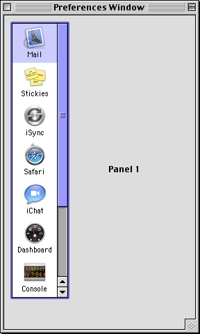
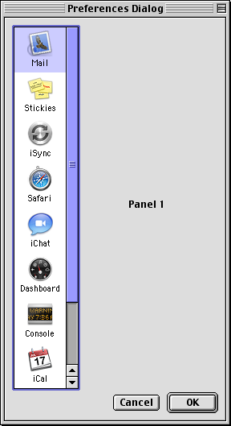

For many applications this will be the hardest step. The higher system requirements your application already has, the easier this step will be. For example, applications that require Mac OS 9 will be easier to port than applications that run on Mac OS 7.5.
For this tutorial, we will be examing a simple application that uses a list box to change the contents of a panel. Such interfaces were common in Mac OS 8 and 9 for preferences dialogs, however in Mac OS X, preferences dialogs should follow the Apple Human Interface Guidelines and use a toolbar interface to switch preference panels. Nevertheless, this application is a good example of how to update some basic elements of a Mac OS application.
The application consists of a menu bar, a window, and a modeless dialog. The window and modeless dialog appear almost identical and are provided to illustrate how to port a wider variety of UI elements.
 The two cornerstones of preparing a Classic application to be ported to Carbon are to use the Appearance Manager for everything you possibly can (and minimize your use of QuickDraw) and to pass around EventRecords as little as possible. There are some other things this sample shows that will make the porting process easier. Most importantly, don't use any functions marked as desprecated unless there is no other possible way to do what you want in Classic (as is sometimes the case). When using Window Manager calls, use as much version 2 calls as possible. Use window properties where appropriate instead of storing a handle to a structure in the window reference constant. Stop using GetNewCWindow(), use CreateWindowFromResource() or CreateNewWindow() instead. Make sure your resources are totally up to date by using the appropriate definition procedures and extended resources. Don't use modal dialogs; use movable modal dialogs, or better yet modeless dialogs, in their place. Instead of Icon Utilities use Icon Services. When drawing highlight over text, take antialiasing into account. This means to not use the QuickDraw hilite mode; most often the easiest thing to do is first erase the highlight region, then paint the highlight color as the background, and then draw the text. Although there aren't any exmples in this sample, don't use Standard File, QuickDraw Text, or TextEdit; use Navigation Services, Apple Type Services for Unicode Imaging, and Multilingual Text Engine instead.
Classic applications have to handle their own event dispatching, most often through a WaitNextEvent loop. The sample takes care to separate the event processing from the event handling, thus putting the Classic Event Manager code in one easy to replace chunk. The event dispatching code illustratrates this (some parts have been removed for brevity though). One thing to take special note of is the update event handling. This has been purposefully separated into two parts; updating the window regions, and drawing the window contents.
int main(void)
{
initialize(); // initialization
gDone = false;
while (!gDone) // application event loop
{
EventRecord event;
if (WaitNextEvent(everyEvent, &event, ULONG_MAX, NULL))
{
if (IsDialogEvent(&event))
HandleDialogEvents(&event);
else
handleEvents(&event);
}
else
doIdleProcessing();
}
finalize(); // finalization
}
static void handleEvents(EventRecord *event)
{
WindowRef window;
Boolean activate;
WindowPartCode partCode;
OSErr error;
Rect tempRect, newSize;
long menuChoice;
MenuCommand commandID;
RgnHandle grayRegion;
switch (event->what)
{
case activateEvt:
window = (WindowRef)event->message;
activate = (event->modifiers & activeFlag) != 0;
HandleActivate(window, activate);
break;
case mouseDown:
partCode = FindWindow(event->where, &window);
switch(partCode)
{
case inContent: // the following window part codes will only be returned
if (window != FrontWindow()) // for the preferences window
SelectWindow(window);
else
HandleContentClick(window, event->where, event->modifiers);
break;
}
break;
case keyDown:
case autoKey:
if ((event->modifiers & cmdKey) != 0)
{
UInt32 keyMenuChoice;
keyMenuChoice = MenuEvent(event);
error = GetMenuItemCommandID(GetMenuRef(HiWord(keyMenuChoice)),
LoWord(keyMenuChoice), &commandID);
if (error = noErr)
HandleMenuChoice(commandID);
}
else
{
window = FrontNonFloatingWindow();
if (window != NULL)
{
char keyCode = (event->message & keyCodeMask) >> 8;
HandleKeyDown(keyCode, window);
}
}
break;
case updateEvt:
window = (WindowRef)event->message;
SetPortWindowPort(window);
BeginUpdate(window);
HandleDrawContent(window);
EndUpdate(window);
break;
case kHighLevelEvent:
AEProcessAppleEvent(event);
break;
}
} // handleEvents
void HandleDialogEvents(EventRecord *event)
{
Boolean eventHandled;
DialogRef prefsDialog;
DialogItemIndex itemHit;
eventHandled = dialogFilter(event, &prefsDialog, &itemHit); // we call this
// before and not after DialogSelect to filter out key presses that should simulate
// clicks on the OK or Cancel buttons and to respond to menu key equivalents
if (!eventHandled) // handle most other events
eventHandled = DialogSelect(event, &prefsDialog, &itemHit);
if (eventHandled)
{
handleDialogItemHit(prefsDialog, itemHit);
}
}
Take a moment now to peruse the various source files in the 1_Classic folder. Most of the code should be pretty basic Mac OS Toolbox stuff. When you feel comfortable with how the program works, continue on to the next section.